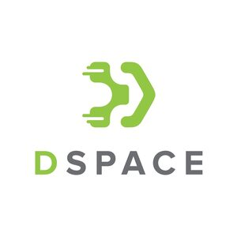
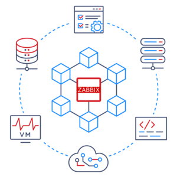

IT Analyst
IFES — Federal Institute of Espírito Santo
Supporting institutional technology services while strengthening a backend engineering practice centered on maintainable APIs, automation, and reliable delivery.
Backend engineering · Espírito Santo, Brazil
Backend Developer
Building reliable backend systems with Laravel, expanding into Spring, and connecting APIs, data, and DevOps practices.
01
I connect more than a decade of institutional IT experience with backend software development, bringing an operations-aware perspective to systems that need to remain useful, maintainable, and reliable.
My primary path is PHP and Laravel. I am expanding that foundation into Java and Spring while continuing to work across APIs, relational data, automated testing, containers, and delivery practices.
I am diving deep into agentic coding tools such as Claude Code and Codex to improve how I design, test, review, and deliver software.
02
A career shaped by public education, institutional systems, and continuous software engineering growth.
IFES — Federal Institute of Espírito Santo
Supporting institutional technology services while strengthening a backend engineering practice centered on maintainable APIs, automation, and reliable delivery.
UFES — Federal University of Espírito Santo
Worked across institutional systems, infrastructure, software delivery, and technical support in a long-term public education environment.
CSI — Solução & Tecnologia
Performed software testing and quality activities before moving into the federal education sector.
Metalser Indústria e Comércio de Aço
Combined information technology support with production planning responsibilities in an industrial environment.
ArcelorMittal Brasil
Started a professional technology path in a large industrial organization.
03
Institutional work across software, digital repositories, and service monitoring.
Application
Contributed to an institutional employee management system, applying web development and maintainable information-management practices.
View source on GitHub
Platform
Worked with a DSpace-based repository used to organize and provide access to institutional digital content.

Observability
Supported monitoring practices for institutional services and infrastructure using Zabbix.
04
An intentional stack: backend first, supported by data, delivery, operations, and modern engineering tools.
01
PHP, Laravel, REST APIs, automated testing
02
Java, Spring
03
SQL, relational database design
04
Linux, Git, Docker, Kubernetes, CI/CD, Zabbix
05
Claude Code, Codex
05
Formal education reinforced by continuous technical learning.
Postgraduate specialization in Software Engineering
Bachelor's degree in Information Technology
Technical program in Information Technology
Coursework in Docker, Kubernetes, automated software testing, relational database design, and Moodle.
FAESA Academic Merit Awards — 2017 and 2018.
06
Open to conversations about backend development, Laravel, Spring, APIs, DevOps, and agentic software development.